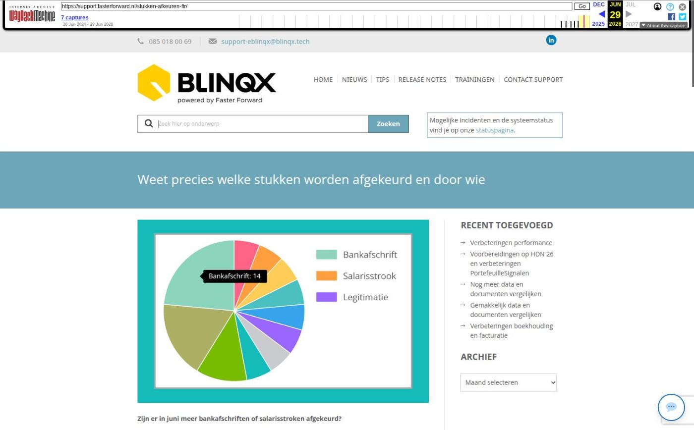

Weet precies welke stukken worden afgekeurd en door wie

Tekstinhoud
Title: Weet precies welke stukken worden afgekeurd en door wie | Support
URL: https://web.archive.org/web/20260629231237/https://support.fasterforward.nl/stukken-afkeuren-ftr/
Source element: <article>
---
Zijn er in juni meer bankafschriften of salarisstroken afgekeurd?
En door welke geldverstrekker? Dat zie je nu overzichtelijk in de module 'Managementinformatie' in Elements. Zo heb je meer inzicht in de hypotheekaanvragen van je advieskantoor en/of adviesketen. Bovendien kun je hiermee je First Time Right verbeteren.
Met deze managementinformatie krijg je antwoord op vragen als:
Worden salarisstroken vaker afgekeurd dan identiteitsbewijzen?
Keurt ING meer stukken af dan de Rabobank? En welke stukken dan?
Welke behandelaar veroorzaakt de meeste afgekeurde stukken?
Bij welk kantoor worden de meeste stukken afgekeurd?
Heb je geen toegang tot 'Managementinformatie'? Neem dan contact op met de interne beheerder van je Elements-omgeving en laat hem/haar contact opnemen met onze supportafdeling.
Uitleg werking Managementinformatie
Je vindt 'Managementinformatie' door in je Elements omgeving op het cirkeldiagram-icoon te klikken.
In onderstaande video leggen we uit hoe de grafieken werken.
Grafieken
Welke stukken worden het meest afgekeurd?
Je ziet precies hoevaak in een bepaalde maand stukken worden afgekeurd door geldverstrekkers. Zo zie je bijvoorbeeld de afgekeurde stukken door Rabobank in juli 2023. Maar ook welke stukken het meest worden afgekeurd door Frits Breidens, een behandelaar (medewerker) van je advieskantoor.
Wie keurt het meest af?
Je ziet precies welke banken en geldverstrekkers de meeste stukken afkeuren. Dit zie je per maand of voor een bepaalde soort stuk.
In dit voorbeeld is Smaragd Bank een fictieve bank.
Wie zorgt voor de meeste afgekeurde stukken?
Je ziet per maand precies van welke behandelaar de meeste stukken zijn afgekeurd. Bovendien kan je hier op de behandelaar klikken om te zien om welke soorten stukken het gaat.
Bij welk kantoor worden de meeste stukken afgekeurd?
Heeft je adviesketen meerdere locaties? Dan zie je per locatie hoeveel stukken zijn afgekeurd, in welke maand en welke soort stukken.
Zo zie je bijvoorbeeld dat bij Diamant Advies Utrecht de werkgeversverklaring het meest is afgekeurd in juni 2023.
Geplaatst op 31 juli 2023 (Laatste update: 17 april 2024)